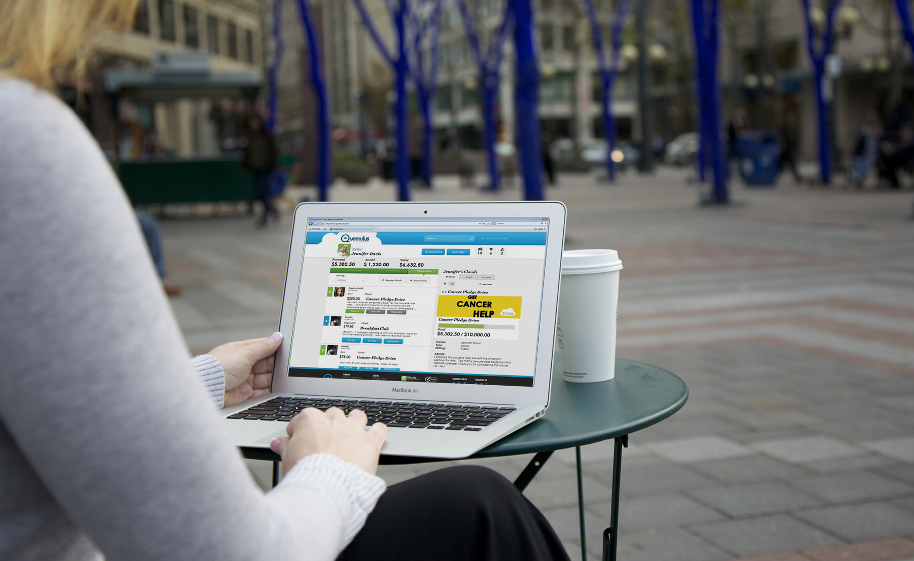
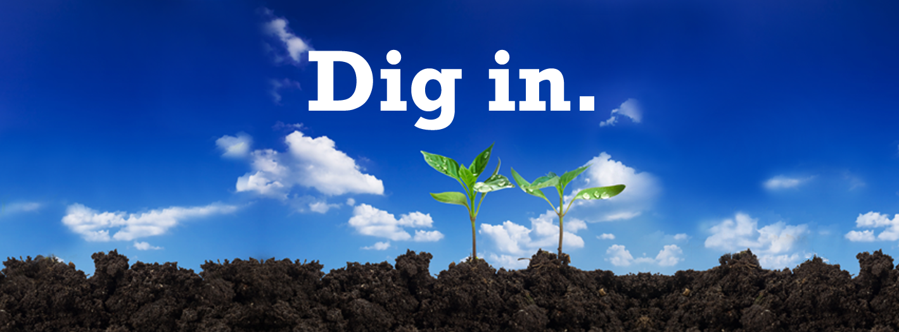
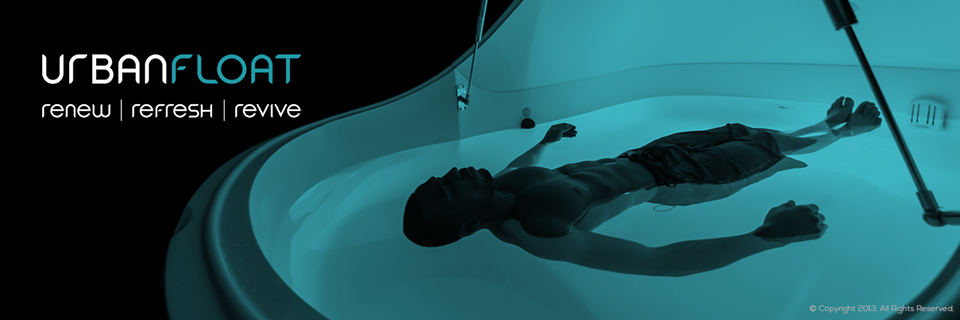

What do an acclaimed local burger joint and the Internet have in common?
They both run the #FoodPorn game without apology.
Foodies aside, there's still a huge market for a snarky, fun loving brand like Li'l Woody's Burgers & Shakes. Originating on the fringe of Capitol Hill and Downtown Seattle with a second location off Market in Ballard offering a full service Molly Moon's ice cream bar, Li'l Woody's was perfectly positioned as an institution in multiple communities. To exemplify this, the "burger thugs" (long story) collaborated with local businesses/causes/events to create exclusive burger specials every week. To tie it all together they needed a concerted and meaningful branding machine that not only got the word out but also meshed seamlessly with its complicated logistical needs. And that's where we came in: From the #IHeartBurgers Valentine's Day photo contest to the FREE burger campaigns for Memorial Day and Labor Day, we have ever since been perfecting the recipe of social, marketing, and community.
Now you may be wondering, why would the hottest athlete on the planet need help with marketing? Well he doesn't, but when it comes to a good cause such as the Richard Sherman Celebrity Softball game benefiting over 25 local foundations, we just couldn't help but get involved. Here's the scale of it: in 2013 (pre Superbowl Champion status) the event pulled in around 7,000 in attendance to raise school supply money for needy kids; in 2014 Richard anticipated over 20,000 with an additional 25 local foundations also benefiting. That went from a 3rd down run to a 100 yard kick return.
Pulled in as a Hail Mary attempt, we were tasked with the development and execution of a social media amplification plan that would unify the digital presence of 25 non-profit organizations. The #YouMadBro selfie contest garnered 200+ submissions with 200,000+ media impressions. But most importantly, a ton of kids got to see the game for free.
There is no shortage of digital payment platforms in today's market, however Quemulus is a unique platform, which offers a social aspect never before seen. In true start-up spirit, they needed to develop a comprehensive framework that would lay the foundation for their social media, traditional, PR, and overall digital voice. That's exactly what we did and as the glue set, these building blocks grew and helped drive the development of their visual identity, web presence, and ultimately, their mobile application.
Back in 1985, Lenz Earthworks began as a sand and gravel wholesaler based in Stanwood, WA. However, as their offering of products and services has grown and diversified to include residential consumers, they recognized a need to be more interactive with their community online than a website would allow. They asked us to refine their digital presence and messaging and what did we do? We made dirt social: a new digital creative suite for Lenz Earthworks to showcase on Facebook, Twitter, LinkedIn, and Google+ along with a content strategy to address the messaging, frequency, and tone that Lenz was trying to accomplish.
So how about a casual day of "sensory deprivation via isolation tank?" The new and progressive boutique stress relief experience has taken hold of the Greater Seattle area and Urban Float was leading the charge. However, with a distinct demographic shift occurring in the growing city they needed a bit of a face life. The rebrand strategy included digital asset and content creation, social media campaign development, and a revision of their visual voice.
